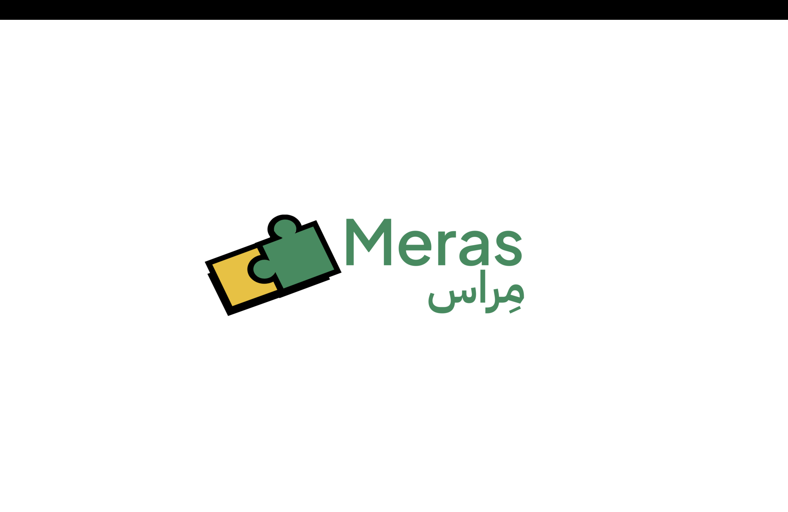

Try real university major tasks, get feedback from actual college students, and make a confident decision about your future — before committing four years of your life.
Meras is a web platform aimed at high school students who are unsure about which university major to choose. Instead of reading generic career descriptions or relying on personality tests, Meras lets students try actual tasks from different majors — the kind of work they'd do in their first semester — and get honest feedback from college students currently studying those fields.
The idea came from a real pain point: many students pick majors based on vague impressions or family pressure, then switch or drop out once the reality hits. Meras tries to close that gap before it's too late.
The primary goal was to build something that actually helps students, not just a demo. That meant designing real task flows for different majors, a clean submission and review system, and a way for college mentors to provide structured, useful feedback rather than just open text.
On the technical side, the goal was to build a proper full-stack application — not just a static site — with authentication, a database, and a real API layer.
Students browse available majors and see a realistic preview of what studying that field involves — not a glossy brochure description, but actual task types and difficulty levels as described by current students.
Each major has a set of tasks a student can attempt and submit. The tasks are designed to be completable in 1–2 hours and represent a real slice of what the major involves.
College students who have signed up as mentors review submissions and provide structured feedback — rating things like aptitude, interest signals, and realistic expectations — giving high schoolers an honest, peer-to-peer perspective.
The hardest design problem was the mentor matching flow. We didn't want a flood of submissions going to the same mentor, and we didn't want students waiting weeks for feedback. Balancing load across mentors with a fair queue was more complex than initially expected.
Getting the content right for each major was also a real challenge — you can't fake what a CS task or architecture assignment actually looks like if you want the experience to be honest.
Meras taught me that product thinking and engineering thinking are different skills that need to happen in parallel. The technical architecture was straightforward, but the hardest work was figuring out what the actual user journey should be — what screens, what information, what friction to add or remove.
It also reinforced that MongoDB's schema flexibility is a double-edged sword. It's great early on, but inconsistent document shapes create subtle bugs later. A little upfront schema planning saves a lot of defensive null-checking.